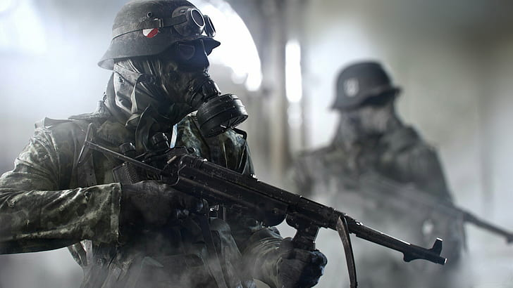

Battlefield V
Ambientado na II Guerra Mundial, Battlefield V é o novo capítulo na série de ação da Eletronic Arts. O game é uma sequência direta de Battlefield 1, seguindo os eventos do título anterior. Desta vez, a novidade é que o jogo é focado na participação de mulheres na guerra.
Como em outros games da série, o grande destaque do game vai para os excelentes gráficos e o modo multiplayer, que permite reunir até 64 jogadores, divididos em esquadrões de 16 personagens. Uma das adições do game foi o "Final Stand" durante as Operações, em que o jogador só pode contar com a arma primária e munição limitada, sem direito a respawn.